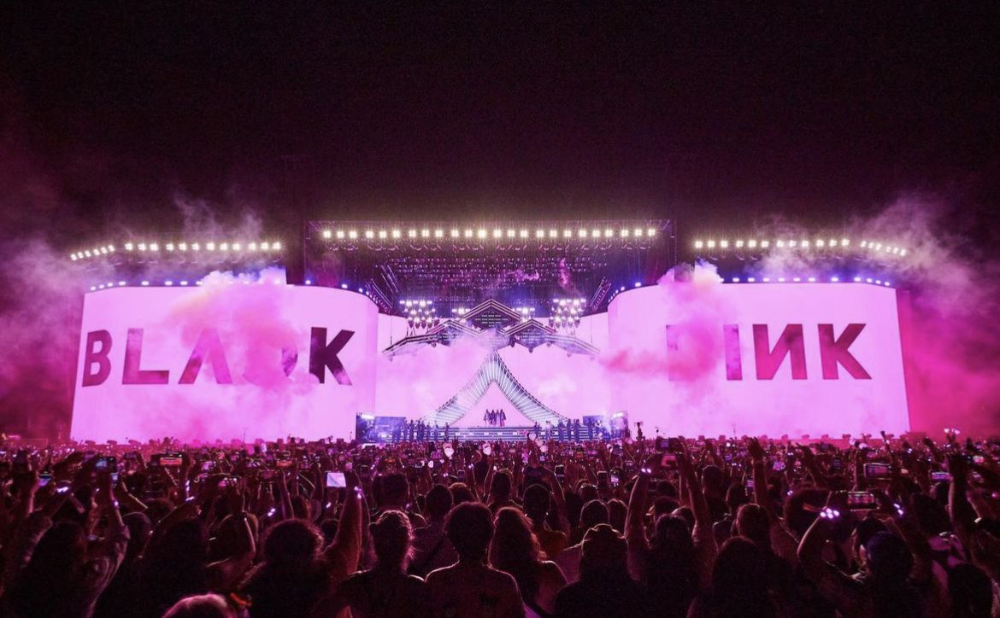

Pemesanan aman
Data tiket tersimpan rapi dan status pesanan mudah dicek kembali.

Booking cepat untuk event pilihan
Temukan konser favorit, bandingkan tiket, lalu pesan tanpa ribet dari satu tempat.
Konser Mendatang
Konser tidak ditemukan. Coba kata kunci atau genre lain.
Kenapa ConcertIn
Data tiket tersimpan rapi dan status pesanan mudah dicek kembali.
Pilih konser, cek harga, dan lanjutkan pembelian dalam beberapa langkah.
Venue, jadwal, genre, dan sisa tiket ditampilkan langsung di kartu konser.